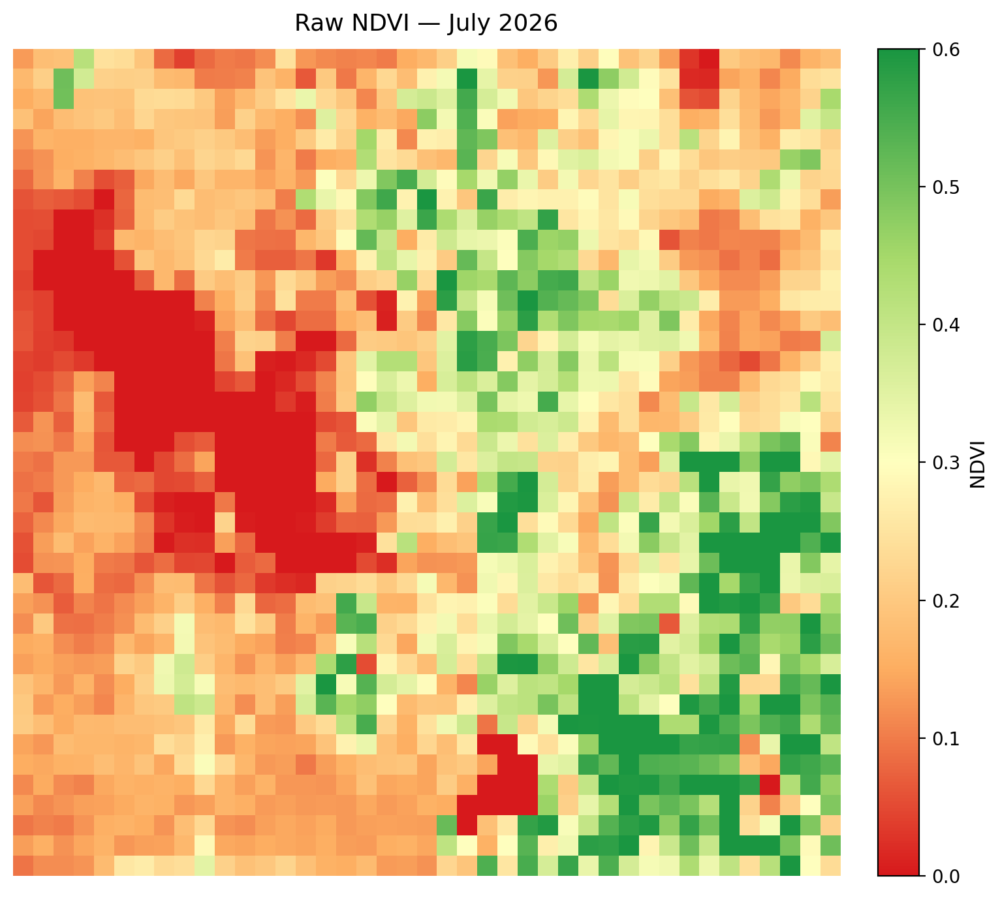
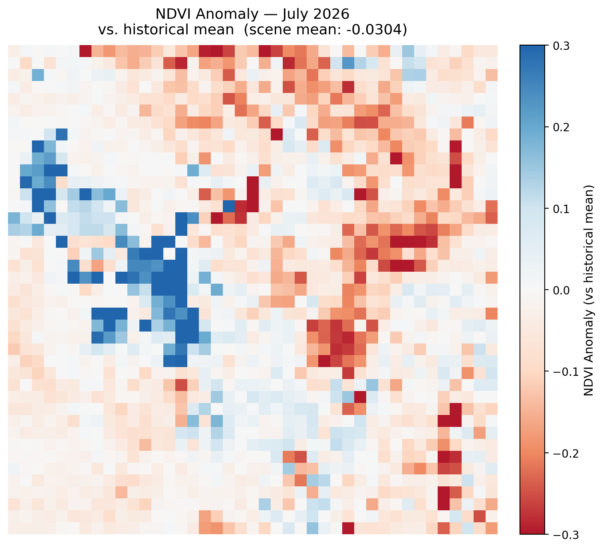
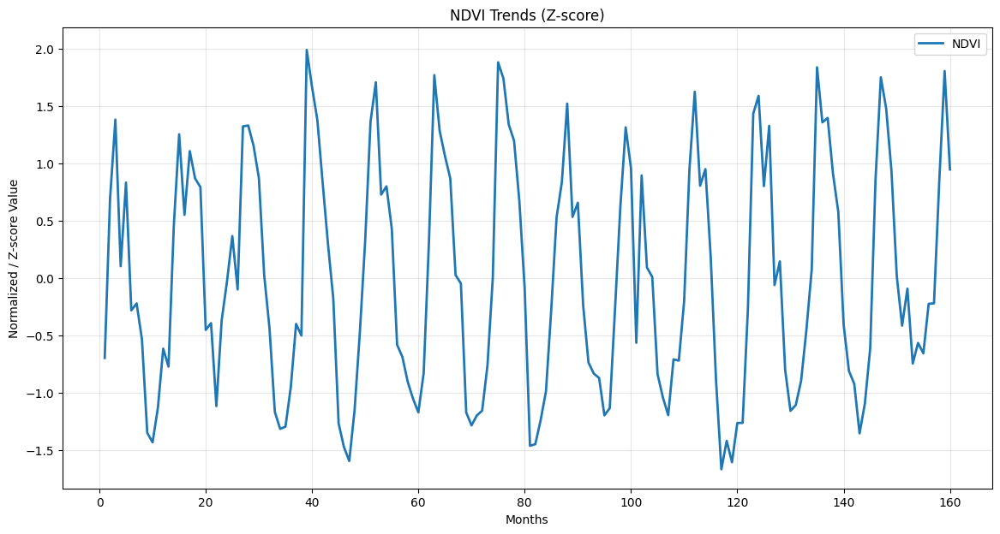
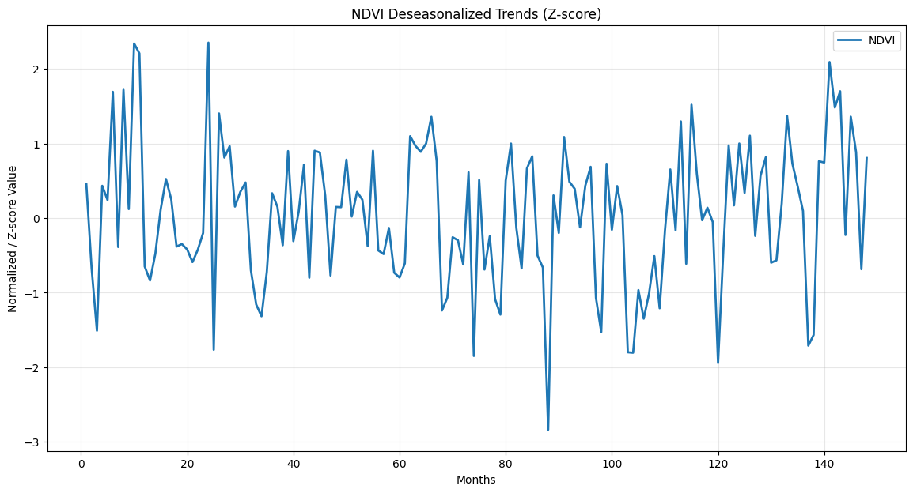
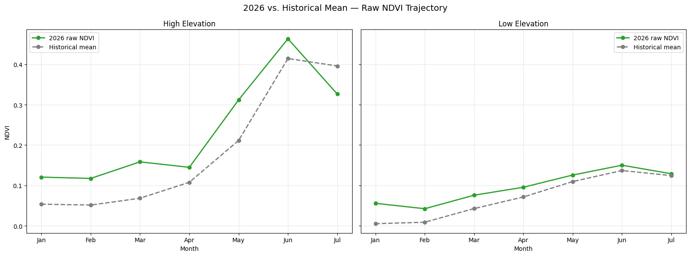
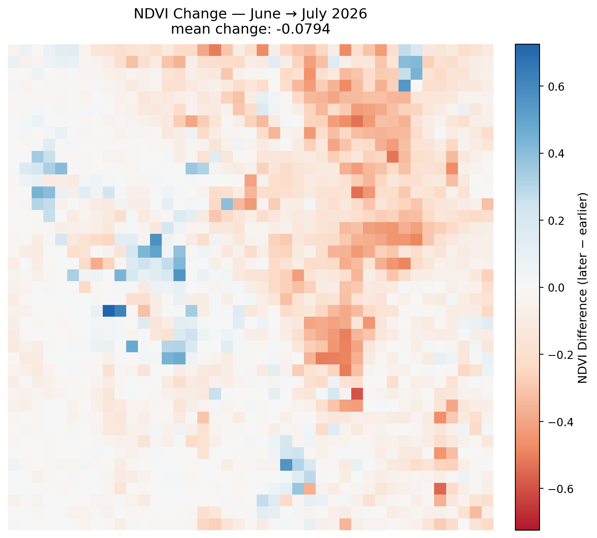
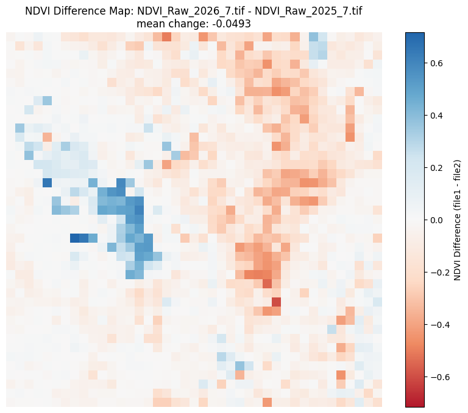

Monthly Report · Issue 08
July 2026
Vegetation dynamics across the Wasatch Front
By Scott Vars
Published August 30, 2026
Vegetation dynamics across the Wasatch Front
By Scott Vars
Published August 30, 2026
This map shows the raw vegetation index across the Wasatch Front for July 2026. The scene has a big divide between seemingly higher elevation, mountainous regions, and lower elevation or urban regions. This is largely expected from this time of year. The more mountainous regions seem to be pushing 0.5-0.6 in terms of NDVI, expected of healthy vegetation, while the lower elevations seem to be around the 0.2 range. Though there are quite a few more vegetated areas surrounding Utah Lake and the Salt Lake Valley. The lake values (Great Salt Lake and Utah Lake) sit at 0, as normal. However, it does seem like we are waning off from that large amount of vegetation back in June.

NDVI was largely below average for July 2026, with a scene-mean anomaly of about -0.0304 relative to the historical July mean. This is a net-negative signal, and while there are minute gains in vegetation in the Salt Lake Valley and surrounding areas, there are large decreases in the mountainous regions of the Front. These huge, negative decreases are almost uniformly in the higher elevations, which we will later see in the rest of the report. Because this map is z-scored, the seasonal green-up/down signal is effectively stripped out, so the negative anomaly shows genuinely declining vegetation levels rather than simply the time of year (which would be the case if we were comparing it to previous months, for example). This is not great for July, however, as typically July tends to wane off in vegetation, with small change, variably for either positive, neutral, or negative change. Such a steep decline in vegetation is concerning for the region, as this is usually the behaviour in August, and comparing this July to previous years' Augusts we actually see that they are quite comparable. A hypothesis for this decline actually may be related to something we saw back in March. For those unfamiliar, this last winter, there was not a lot of snow cover or precipitation, combined with a much warmer winter, which together led to an earlier green-up. This sharp decline is likely a result of the compressed summer season, as, though it may usually end in August or September, the early, shifted green-up may be causing the vegetation decline to occur earlier than usual.
A sharp decline in vegetation levels across the Wasatch Front in July 2026, with the most significant decreases occurring in the higher elevation areas.

Looking at the updated NDVI trends, June 2026 sits right near the seasonal peak, and even exceeds the historical peak for this time of year. However, the trends for July 2026 show a significant decline in vegetation since then. We can see in past years that this pattern is largely expected, though not to this degree. In previous years, July is typically a time of slow decline or stagnant growth in vegetation. However, such a sharp decline is likely due to the compressed growing season we first flagged back in March. Since we are running around a month ahead of schedule in terms of the biological clock, we are seeing behavior typical of August occurring now, reflected in this data as a much sharper decline.


To test the compressed-season hypothesis directly, we split the Wasatch Front into high- and low-elevation halves and plotted each against its own historical monthly average. The result is the clearest evidence yet for what's driving this month's anomaly. At high elevation, 2026's raw NDVI ran consistently ahead of the historical curve from January through May, then did something the historical curve didn't: it peaked in June at a level that exceeds the historical June peak outright, before turning sharply downward. The historical curve, in contrast, is still climbing toward its own July peak at the point where 2026's line has already turned over. That crossing point is the compressed season made visible, because vegetation up high didn't just arrive at peak greenness early, it overshot the typical peak before rolling into an early decline.
The low-elevation half tells a completely different story, and that contrast is itself the important part. Down in the valley and desert benches, 2026's trajectory tracks almost exactly on top of the historical average all season, with both lines still rising as of July. There's no overshoot, no early peak, and no crossover. This tells us the compressed season isn't a scene-wide effect or a processing artifact, but it's actually specific to the high country, which is exactly where a snowmelt-driven timing shift would be expected to show up first and hardest.
High-elevation vegetation peaked above its historical average in June before an early decline; low-elevation vegetation shows no such pattern, pointing to a snowmelt-driven, elevation-specific cause rather than a broader regional signal.

NDVI declined sharply from June to July 2026, with a mean change of -0.0794 across the Wasatch Front region, which is the steepest month-over-month drop of the season so far. The decline is mostly concentrated in the northeastern portion of the scene, which is largely the higher elevation areas, like discussed above. This is the same high country that was posting the strongest gains as recently as June, which shows that the peak of the growing season has already passed there. A handful of blue patches continue to show along the western edge of the scene, meaning that there are still some isolated pockets, likely irrigated cropland or riparian corridors, that continued to green up even as the broader region turned. Aside from those scattered exceptions, virtually the entire vegetated half of the Front posted a loss this month, consistent with the compressed, early-running growing season flagged back in March finally catching up with high-elevation vegetation.

Any sharp isolated changes over the open water of the Great Salt Lake, Bear Lake, or Utah Lake are likely remote sensing artifacts and should be disregarded. They are generally not real readings — when cross-checked against the raw NDVI maps, the lake pixels did not meaningfully change.
Compared to July 2025, NDVI is down meaningfully this year, with a mean change of -0.0493 across the Wasatch Front. The region is now measurably behind where it stood at this point last summer. The pattern closely mirrors this month's month-over-month decline: a dense cluster of red pixels in the northeastern mountains shows this year's high country running well below last July's greenness, while a pocket of blue in the west-central part of the scene marks a modest gain in that same recurring corridor. Given the timing lines up with both the sharp June-to-July decline and the negative anomaly against the historical July mean, the most likely explanation remains the compressed growing season kicked off by this past winter's low snowpack and early warmth, and now the high-elevation vegetation appears to be entering its late-summer decline about a month earlier than it did in 2025.

July 2026 marks the first unambiguous downturn of the growing season across the Wasatch Front. Raw NDVI remains healthy in absolute terms — the high country is still holding in the 0.5–0.6 range and the valley floor around 0.2–0.3, but every relative measure in this report points the same direction: a -0.0794 month-over-month drop from June, a -0.0493 year-over-year decline from July 2025, and a -0.0304 anomaly against the 2013–2026 historical July mean. The trend graphs confirm this wasn't a one-off pixel-level fluctuation; both the raw and deseasonalized series show July 2026 falling off the seasonal peak faster than the historical pattern for this month, more consistent with typical August behavior than a typical July.
The most consistent explanation across this report and the last several months remains the compressed growing season triggered by this past winter's low snowpack and early warmth. Vegetation phenology across the Front greened up roughly a month ahead of the historical calendar back in March, and that same month-long offset now appears to be pulling the late-summer decline forward as well; July 2026 is behaving like a typical August. If this pattern holds, August and September readings should show the decline decelerating rather than deepening, as the vegetation cycle catches back up to a normal seasonal shape — though June's overshoot past its historical peak and a June-to-July drop roughly four times steeper than 2025's leave open the alternative that the decline continues rather than levels off. We'll be watching the August data closely to see which outcome plays out.
NDVI values derived from Landsat 8 TOA median composites at 5.5km resolution. Difference maps computed from raw NDVI prior to any normalization. Historical comparisons use the 2013–2026 Landsat archive.
Landsat 8/9 imagery courtesy of the U.S. Geological Survey via Google Earth Engine.
NOAA National Centers for Environmental Information, Monthly Climate Reports and drought summaries.